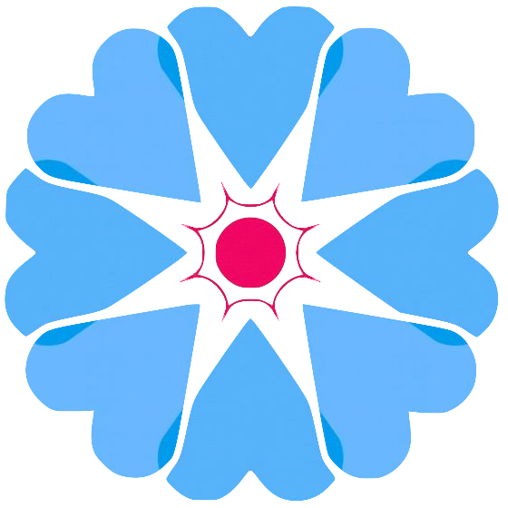

<!--
  Generated template for the SearchPage page.

  See http://ionicframework.com/docs/components/#navigation for more info on
  Ionic pages and navigation.
-->
<ion-header>

  <ion-navbar>
    <ion-row>
      <ion-col left text-left>
        <button ion-button icon-only clear>
          <ion-icon name="menu"></ion-icon>
        </button>
      </ion-col>
      <ion-col center text-center>
        
      </ion-col>
      <ion-col right text-right>
        <button ion-button icon-only clear (click)="more($event)">
          <ion-icon name="more"></ion-icon>
        </button>
      </ion-col>
    </ion-row>
  </ion-navbar>

</ion-header>


<ion-content no-padding>

  <ion-searchbar animated="true" color="light"></ion-searchbar>


</ion-content>